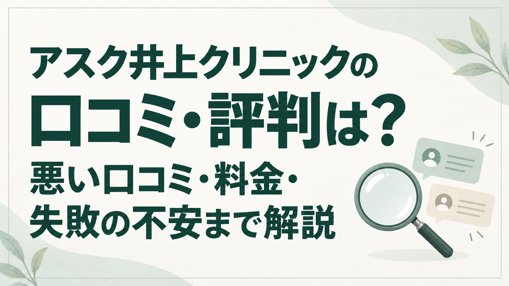

アスク井上クリニックの口コミ・評判を調べると、説明やスタッフ対応、発毛後の見た目を評価する声がある一方、費用や密度、術後の対応への不満も見つかります。「評価が高いから安心」「悪い口コミがあるから失敗する」と決める前に、何を受け、いつの段階で、何に満足・不満を感じた投稿なのかを見ておきたいところです。
結論：アスク井上クリニックの口コミ・評判を調べた結果
まず知っておきたい3つのこと
- 相談・説明への評価は複数媒体で確認。医師によるデザインや必要株数の説明、予約・手術時のスタッフ対応が判断材料になります。
- 費用と仕上がりの密度は、納得してから決めたい点。相談時に高額と感じた声に加え、施術後の発毛を実感しながら密度に物足りなさを感じた体験談もあります。
- Googleには結果や術後対応への低評価もあります。医療上の失敗率は口コミから算出できません。予定株数・移植範囲・担当医・結果に不満がある場合の対応を確認しましょう。
説明を聞いて生え際のデザインや術式を比較したい人には、相談先の候補です。ただし、院長指名の費用、モニターの条件、術後対応まで含めて判断することをおすすめします。
根拠：下記のGoogle口コミ、ホットペッパーの受診者口コミ、口コミ広場の施術レポート。口コミは個人の感想で、治療効果の保証ではありません。
記事全体の目次を開く
Google・ホットペッパー・口コミ広場を比較
媒体によって投稿条件と評価の集計方法が異なります。星の数字を横並びにして平均するのではなく、相談段階の評判と、施術後の経過を分けて読み比べました。
表は横にスクロールできます。件数・評価は2026年10月4日に確認できた各媒体の表示です。
| 口コミ媒体 件数・評価 | 良い評価で見られた点 | 気になる口コミ | 時期・特徴 |
|---|---|---|---|
| Googleマップ | 説明、プライバシーへの配慮、自然さ・発毛実感 | 密度・定着、術後対応、施術中の不安 | 最新表示は「2か月前」。相談・術後の投稿が混在。本文を確認した範囲で分析 |
| ホットペッパー | 医師によるデザイン・必要数の説明、円滑な対応 | 2件とも費用の負担感。1件は予約の取りにくさ | 2025/10/28・2026/2/14投稿。いずれも女性の相談段階 |
| 美容医療の口コミ広場 | 医師・スタッフ対応、術後ケア、発毛経過 | 発毛を感じても密度に物足りなさ。予算との兼ね合い | 一覧の施術日は2016〜2022年。9か月・12か月後の結果レポートあり |
調査範囲と口コミの読み方
Googleは関連性の高い順・評価の低い順・新しい順で表示された計11投稿（重複を除く）を確認しました。このうち本文がある投稿は10件、評価のみが1件です。ログインを求める閲覧制限があり、71件すべての本文を調べたものではありません。星の内訳はGoogleの集計表示で、テーマ別件数とは異なります。
ホットペッパーは掲載2件の本文、口コミ広場は5件の一覧と、経過を詳しく読める2件の個別レポートを中心に確認しました。口コミ広場の一覧には自動要約があるため、分析は確認できた投稿本文を優先しています。男女別ページに同じ投稿があっても別件として数えていません。
以下の「共通点」はこの閲覧範囲での定性的な分析です。全患者の満足度、テーマの出現率、医療上の成功率を示すものではありません。Googleの相対日付を正確な投稿日へ換算せず、口コミ広場の施術日を投稿日と混同しないようにしています。
Google口コミの評判：高評価が多い一方、結果への不満も
Googleマップ「アスク井上クリニック 新宿」の表示は平均4.5・71件でした。星5が55件、星4が9件、星3が0件、星2が2件、星1が5件です。高評価が多い分布ですが、低評価の理由を個別に読むことが大切です。
出典：Googleマップ「アスク井上クリニック 新宿」（2026年10月4日確認。以下は元投稿の要約）
良い投稿は「説明」「人目への配慮」「発毛後の実感」
- 星5・2か月前：密度と自然な見た目への満足を述べる短い投稿。術式・術後期間が分からないため、長期結果の詳細は判断できません。
- 星5・最終編集8か月前：相談時に将来のことまで説明され、不要な治療は不要と伝えられた点を評価。人目に配慮した待合室にも触れています。施術を決める前の感想です。
- 星5・10か月前：事前説明に安心感を持ち、施術から半年を振り返って受けてよかったと述べています。
- 星5・1年前／2年前：電話・手術当日の円滑な対応を評価する投稿と、術後の発毛を喜ぶ投稿を確認しました。前者は仕上がりを楽しみにしている段階、後者は経過への感想です。
低評価は、密度・定着とトラブル時の対応が主な論点
本文を確認できた星1の4投稿では、密度や発毛・定着への不満がいずれにも見られました。3か月前の投稿は移植部の膨らみ・しこりと再診時の対応への不満、4〜6年前の投稿は施術中の不安や、事前説明と施術範囲・密度の認識のずれを訴えています。残る星1の1投稿は本文がなく、理由は判断できません。星2の2件は今回本文を閲覧できませんでした。
これらは投稿者の申告です。診療記録や計測条件を確認できないため、実際の移植株数、原因、医療上の過失までは検証できませんでした。確認した星1投稿の表示範囲では院側の返信も見当たりませんでした。低評価の具体的な読み方は悪い口コミの分析で整理します。
なお、星5の相談レビューにも受付で感じたにおいや室温への指摘がありました。星の数だけで、本文中の不満を取りこぼさないことも重要です。同様のにおい・室温の指摘は、今回確認した他の投稿では見つかっていません。
ホットペッパービューティー美容クリニックの口コミ
掲載は2件、総合4.00。院内の雰囲気4.0、予約の取りやすさ3.5、医師の対応4.0でした。媒体の説明では実際の受診者が投稿し、平均点は直近2年間が対象です。
2026年2月14日・総合4：刈らない方法への関心と費用の迷い
女性の相談者は、刈り上げない選択肢を知った一方、価格が高額で検討中としています。予約は取りづらかったものの、空き日程のメール案内後は予約できたとのこと。予約の取りやすさと、その後の案内対応を分けて評価する内容です。
2025年10月28日・総合4：デザインと必要数の説明、想定以上の費用
女性の相談者は、気になる生え際を確認してもらい、医師がデザインと必要数を示したと記載。対応は円滑だったものの、想定より高い費用で検討したいという感想です。
2件ともカウンセリングの判断材料で、植毛後の発毛を評価した投稿ではありません。この2件から手術の痛み・仕上がり・アフターケアの良し悪しは分かりません。「一生モノ」といった説明を受けた旨があっても、当記事では生涯の効果保証として扱いません。
美容医療の口コミ広場の口コミ：発毛と密度の満足は別
総合版の一覧は5件・総合満足度3.08です。項目別では施術内容・効果4.3、コスト感・費用満足度3.5、医師・スタッフ対応4.5、医院設備・通いやすさ4.3。媒体は新しい投稿の影響を大きくする調整を明示しており、総合3.08を5人の点数の単純平均としては扱えません。
一覧にある施術日は2016年2月20日、2018年3月9日、2022年6月17日・7月1日・9月3日です。古い施術の体験談なので、現在の医師体制や料金の根拠にはしません。正確な投稿日は今回確認できず、以下は施術日とレポートの経過表示を区別しています。
2022年9月3日施術・個別評価4.63：対応を評価し、密度には物足りなさ
必要株数の相談、医師・スタッフの対応、翌日の洗髪と検診を評価しています。経過レポートでは髪が周囲になじんだ実感がある一方、隣接部との密度差から追加施術も検討。発毛の実感があっても、希望するボリュームに届くとは限らないと読み取れます。
術中の痛みはほとんど感じなかった一方、翌日の洗髪時のヒリヒリ感や、しばらく続いたつっぱり感にも触れています。
出典：口コミ広場・施術と結果の個別レポート（結果欄は「9か月後」、本文は「約10か月」と記載）
2022年6月17日施術・個別評価4.52：予算と株数の選び方を振り返る
希望と予算に合わせてデザインを引き直し、メールでも説明を受けた投稿です。12か月後には発毛経過を述べつつ、800株より多くしておけばよかったと振り返っています。既存毛に上乗せされて密度が倍になる想像と、実際の見え方に違いがあったという趣旨です。
一時的な脱毛やくせ毛への対処、薄毛治療薬の併用も記載されています。見た目の変化を植毛だけの効果と切り分けることはできません。
件数・項目別評価の出典：美容医療の口コミ広場・総合版口コミ一覧。実際に施術した人が投稿する媒体で、予約・施術に伴うポイント還元の案内があります。Googleや相談のみの口コミと投稿条件が同じとは限りません。
良い口コミで共通していた内容
医師の説明・カウンセリング：希望を具体的にする過程への評価
3媒体で共通して確認できたのは、医師が髪の状態を見て、治療やデザインを説明する場面への評価です。特に、必要数を示す、将来の薄毛も踏まえる、希望に合わせて線を引き直すといった具体的なやり取りが参考になります。医師の評判を判断するときは肩書きに加え、希望どおりにできる部分と、難しい部分の理由を聞けるかを見ましょう。
スタッフ対応・院内の雰囲気：連絡と人目への配慮
Googleと口コミ広場では電話・メール・当日の対応を評価する声があり、ホットペッパーでも円滑な対応や予約可能日の案内が確認できました。Googleには他の来院者と顔を合わせにくい配慮への評価もあります。ただし、接客・環境には気になる指摘もあるため、すべての利用者が同じ印象とは言えません。
仕上がり・発毛実感：経過期間のある投稿を優先する
Googleと口コミ広場には、毛が生えた実感や見た目のなじみを評価する投稿があります。一方、相談直後や手術直後の星5は発毛結果の証拠にはなりません。術後期間、移植範囲、株数、薬の併用が分かる投稿ほど、自分の希望と照らし合わせやすくなります。
アフターケア：利用しやすさと結果への対応を分ける
口コミ広場では翌日の洗髪・検診や相談案内が評価されています。公式にも無料の再診・翌日洗髪・アフターフォローの案内があります。ただし、通常の経過確認への満足と、結果に不満があるときの対応への満足は別の問題です。後者にはGoogleで否定的な声があることも踏まえて確認してください。
悪い口コミ・気になる評判：「失敗」の不安をどう判断する？
料金：相談段階で負担に感じる声が重なる
ホットペッパーの2件はいずれも価格を検討理由に挙げ、口コミ広場にも予算から株数を決めた体験談があります。費用の負担感は複数媒体に共通していますが、予想より高いことと、不当な請求があることは別です。後半の料金表で通常料金を把握し、刈り上げの有無・必要株数・追加費用をそろえて見積もりを比べましょう。
密度・定着・仕上がり：単発ではないが、原因は断定できない
Googleの確認できた星1本文4件には発毛や密度への不満があり、口コミ広場の高評価2件にも密度への物足りなさが見られます。ただし、「生えなかったという訴え」「生えたがもっと密度が欲しいという感想」は分けて考える必要があります。
「失敗した」という趣旨のGoogle投稿は確認できました。しかし、写真の条件、術前の状態、診療記録、医師の評価をそろえて調べたものではなく、口コミの件数から失敗率を出すこともできません。星の高低にかかわらず、希望する範囲をその株数でどの程度カバーできるのかが重要です。
申し込み前には、部位ごとの予定株数・面積・目標密度、実際の採取数と移植数の記録、追加施術が必要になる可能性を質問しましょう。術後に差を感じた場合の診察時期、判断方法、費用負担も書面で確認しておくと比較しやすくなります。
術後対応・施術中の不安：無料ケアの案内だけでは判断しきれない
Googleには、術後の膨らみ・しこりを相談した際の対応への不満が1件、施術中の機器やスタッフの言動に不安を感じた古い投稿が複数ありました。診療の経緯は検証できていないものの、読者にとって確認すべき論点です。
公式に無料ケアがあることは、無料修正や返金が保証されることを意味しません。採取・移植など各工程を誰が担当するのか、術中に不安や痛みを伝える方法、術後の連絡先、再手術・返金の条件を確認してください。
予約・待ち時間・接客：少数の指摘を院全体へ広げない
予約の取りにくさはホットペッパーの1件、受付のにおいや室温はGoogleの1件で確認しました。今回の範囲では同じ内容が繰り返される傾向までは確認できません。予約が取れないことと、来院してから長く待つことも別で、院内の平均待ち時間は不明です。希望日が限られる人は、候補日を複数用意して予約時に所要時間も尋ねましょう。
押し売りはない？確認できた投稿から言える範囲
Googleには不要な治療を不要と伝えられたという相談レビューがあり、ホットペッパーの2件は見積もり後も検討中でした。今回読んだ本文では、契約を強く迫られたという明確な記述は確認できませんでした。ただし、全件調査ではないため「押し売りは絶対ない」とは断定できません。比較中であることを伝え、見積もりを持ち帰って判断しましょう。
媒体・時期の違いから読み取れること
最近のホットペッパーは相談と費用、口コミ広場の古いレポートは術後経過・密度、Googleは相談から結果への満足・不満まで幅があります。Googleでは「2か月前」の高評価と「3か月前」の低評価の両方を確認しました。投稿時期と内容が違うため、古い不満は解消された、最近は改善した、とまでは言えません。
口コミから分かった特徴と、口コミだけでは分からないこと
評判を読み解く軸は、デザイン相談の具体性、刈り上げと予算の選択、術後に期待する密度の3つです。ここからは公式情報をもとに、医師・術式・料金を相談の判断材料として整理します。
- 所在地
- 東京都新宿区歌舞伎町2-46-3 SIL新宿（西武新宿駅前ビル）6階
- アクセス
- 西武新宿駅北口から徒歩1分／新宿駅東口・新大久保駅から徒歩8分（公式案内）
- 受付時間
- 10:00〜19:00・年中無休の案内。来院日時は予約時に確認
- 相談方法
- 無料の医師カウンセリング、メール相談、写真見積もりなど
- 治療
- 自由診療の自毛植毛。i-SAFEスタンダード／アンシェーブンi-SAFEなど
出典：公式サイト・所在地と受付案内、公式料金・無料サポート案内
井上浩一院長の経歴と、担当医の確認ポイント
公式プロフィールには、熊本大学医学部卒業・同大学附属病院勤務、1989年の大手美容整形外科勤務、1998年の都内美容外科院長就任、2002年のアイランドタワークリニック開院、2014年のアスク井上クリニック開院が記載されています。公式トップでは卒業年を1988年としています。
FUEを改良してi-SAFEを開発してきた経緯も公式に説明されています。植毛診療に携わってきた経歴は確認できますが、肩書きや経歴だけで自分の結果を保証できるわけではありません。現在の自分に近い症例と、具体的な手術計画を併せて確認しましょう。
「相談した医師＝執刀医」と決めつけない
過去の体験談には相談と手術を別の医師が担当した例があります。現在の体制は予約時に確認してください。公式料金ページには井上院長の手術を指名すると特診料がかかる旨があり、モニター募集ページには担当医師の指名不可と記載されています。
出典：公式・井上浩一医師のプロフィール、料金の特診料注記、モニター募集条件
i-SAFE・アンシェーブンi-SAFEの違い
i-SAFEは、毛根を含む組織を小さなパンチで採取するFUE系の術式です。公式では吸引補助を利用し、毛の太さなどに合わせて直径約0.65〜0.85mmのパンチを使うと説明しています。「切らない」は頭皮を帯状に切除する方法との違いを表すもので、傷や痛みが一切ないという意味ではありません。
| 術式 | 刈り上げ | 料金・相談のポイント |
|---|---|---|
| i-SAFEスタンダード | 採取する部分を刈り上げる | 1株880円。残る髪でどこまで隠せるかを確認 |
| アンシェーブンi-SAFE | 刈り上げずに採取 | 1株1,430円。髪型を保ちたい人の選択肢。費用は高くなる |
| ハイブリッドi-SAFE | 両者を組み合わせる | 株数の配分と刈り上げ範囲、合計費用を個別に確認 |
1株（グラフト）は毛髪1本ではなく、毛根を含む組織の単位です。「1,000本」と「1,000株」を同じものとして比べないでください。採取できる株数や適した方法は、毛の状態や移植範囲によって変わります。
出典：公式・i-SAFEの説明、公式女性サイト・ハイブリッドi-SAFE、公式料金表。術式名から他院より高い生着率を保証することはできません。
料金は高い？基本料金・グラフト単価と株数別の目安
通常料金の計算は基本治療費220,000円＋1株単価×移植株数です。スタンダードは880円／株、アンシェーブンは1,430円／株。以下は基本治療費を含めた税込の試算です。
| 株数 | スタンダード | アンシェーブン |
|---|---|---|
| 500株 | 660,000円 | 935,000円 |
| 1,000株 | 1,100,000円 | 1,650,000円 |
| 1,500株 | 1,540,000円 | 2,365,000円 |
| 2,000株 | 1,980,000円 | 3,080,000円 |
1,000株なら刈り上げの有無で55万円の差になります。「刈らないこと」と「希望する範囲・密度」のどちらをどこまで優先するかが、予算の組み方に関わります。費用を下げるために株数だけ減らす場合は、仕上がりの見通しも一緒に説明してもらいましょう。
見積もりで確かめたい追加費用
公式には医師カウンセリング、初診・再診、血液検査、手術翌日の診察・シャンプーなどが無料とあります。一方、院長指名の特診料は金額が公開されておらず、希望する薬剤の処方費用が別途かかる場合もあります。ローンを使う場合は分割手数料を含む支払総額も確認してください。
出典：公式・費用と料金、公式FAQの追加費用説明（2026年10月4日確認）
モニター価格：30％オフだけでなく公開範囲も確認
公式料金例にはフルフェイスモニター30％オフの表示があります。通常料金に0.7を掛けると、1,000株はスタンダード770,000円、アンシェーブン1,155,000円という参考値です。適用の可否を保証する見積もりではありません。
モニター募集はフルフェイスとハーフフェイスを案内し、どちらも担当医師の指名は不可。フルフェイスは全顔（媒体によって全身）の撮影やインタビュー、ハーフフェイスは眉より上の撮影などが示されています。顔・画像の掲載先、公開期間、通院回数、途中辞退時の扱いを確認し、通常料金と比較してください。ハーフフェイスの割引率は今回確認できませんでした。
出典：公式・モニターキャンペーンの条件。30％オフと試算の根拠は公式料金例です。
症例：口コミの「自然」「密度」を写真で確かめる
公式症例は医療機関が選んで公開した例です。利用者口コミとは分け、同じ結果の保証ではなく、自分に近い範囲・株数・髪質の説明を受ける材料として使いましょう。以下に、施術条件が確認できる公式症例を紹介します。
男性・50代・M字の生え際：800株の例
アンシェーブンi-SAFE、掲載費用1,364,000円（税込）、手術1回。2015年8月23日の施術で、詳細表は術後6か月の経過を示しています。広い範囲へ薄く植えるのではなく、生え際の奥の密度を重視したという説明です。
出典：公式・800株の症例と写真。古い施術例です。同ページの別写真欄には術後11か月の表記もあるため、写真ごとの時期を確認してください。リスクとしてショックロスなどの一時的脱毛を記載。
女性向け公式サイト：生え際・分け目の例
アンシェーブン法の生え際1,500株・2,365,000円（税込）、前頭部〜頭頂部・分け目1,000株・1,650,000円（税込）の掲載を確認しました。採取部の腫れ・赤み・かゆみ等も記載されています。紹介一覧だけでは撮影時期・回数の詳細が分からないため、診察時に確かめてください。
写真は照明、角度、髪の長さ、濡れ具合で印象が変わります。移植した部分だけでなく、採取部の見え方や既存毛との境目、薬の併用、複数回の手術を含むかまで確認すると、「自分にも同じ密度になるはず」という行き違いを減らせます。
女性の自毛植毛にも対応している？
女性向け公式サイト「アスク井上クリニック for women」を運営し、生え際や分け目などの植毛を案内しています。刈り上げない方法や、うなじの細い毛を生え際に用いる説明もあります。ただし、薄毛の原因や採取する毛の状態によって治療方針は異なり、女性なら誰でも植毛が適するわけではありません。
ホットペッパーの口コミも女性の相談例でしたが、仕上がりの評価は確認できませんでした。希望する髪型、額の形、採取部を隠せる長さを伝え、薬による治療なども含めて診断を受けましょう。
交通費・宿泊費補助はある？
公式の補助制度は日本国内に住み、同院で手術を受ける人が対象です。カウンセリングだけの場合は対象外で、手術後に領収書と引き換えに還元すると案内されています。宿泊先の案内・手配サポートもあります。
今回、公式専用ページでは補助の具体的な上限額や還元率を確認できませんでした。口コミ媒体の紹介欄にある「手術費用の3％」を、そのまま現在の確定条件としては採用していません。交通機関、宿泊数、予約方法、モニターとの併用、必要な領収書を移動・宿泊を手配する前に確認してください。
口コミと公式情報から見たメリット
- 相談でデザインと株数を具体化しやすい：説明や希望のすり合わせを評価する投稿が複数媒体にあります。
- 刈り上げの有無を選べる：髪型の維持と予算の兼ね合いで、スタンダード・アンシェーブン・組み合わせを相談できます。
- 男女の症例を参照できる：生え際だけでなく、分け目など自分に近い条件を探せます。
- 相談と術後の基本的なサポートに無料項目がある：公式に医師カウンセリング・再診・翌日洗髪などを明示しています。
デメリット・申し込み前の注意点
- 刈り上げない方法は費用が上がる：同じ1,000株でも通常料金で55万円の差。密度との兼ね合いを考える必要があります。
- 院長指名・モニターには条件がある：特診料の額は個別確認。モニターは医師を指名できず、画像の公開にも同意が必要です。
- 手術後の見た目には個人差がある：赤み・腫れ・痛みや一時的な脱毛、傷跡、密度への不満などの可能性を説明してもらってください。
- 不満が出た場合の保証は別途確認が必要：無料の再診と、無料再手術・返金の条件を混同しないようにしましょう。今回確認した公式ページでは正式な保証条件を特定できませんでした。
- 遠方からは通院計画が必要：新宿の所在地を前提に、翌日診察や経過確認の方法、補助額を確かめてください。
リスクの参照：公式症例のリスク欄、公式女性サイトの症例・リスク欄、公式・術後ケア。症状が気になるときは自己判断せず担当医へ相談してください。
他院との違い：料金だけでなく保証・担当医を比較
以下は通常の頭髪植毛を比較するための参考です。同じ株数でも提案する範囲・採取方法・担当体制は異なります。割引前後の料金や付帯費用をそろえて比べましょう。
| クリニック | 確認できた違い | 比較時の質問 |
|---|---|---|
| アスク井上クリニック | 1,000株で110万円／165万円。院長指名は特診料あり | 誰が執刀するか、指名込みの総額、結果に不満がある場合の対応 |
| アルモ形成クリニック | 1,000株で128.3万円／207.5万円。血液検査11,000円は別 | 追加費用を含む見積もりと、保証の適用条件 |
| リヴァイアクリニック | 基本22万円＋880円／1,430円で、通常の基本料金・単価は同水準 | 同じ予算での提案株数・範囲・術後フォローの違い |
| 新宿東京アイランドタワークリニック | 生着の状態に応じた返金・再手術制度を公式に案内 | 術後6・12・15か月の写真撮影など、利用条件を満たせるか |
金額は税込。2つの金額は刈り上げる方法／刈り上げない方法の順です。出典：アスク公式料金、アルモ公式料金、リヴァイア公式料金、新宿東京アイランドタワー公式保証条件。アスクの特診料・薬剤等、各院の個別追加費用は表の金額に含みません。
アスクの通常料金は、この比較の範囲で一律に最も高いわけではありません。ただし、適した株数や希望の術式によって支払額は大きく変わります。保証がある他院も無条件の返金ではないため、安さと安心を印象で比べず、見積もりと書面の条件をそろえることが大切です。
クリニック比較一覧を見る／東京植毛クリニックの口コミ・料金も確認する
アスク井上クリニックが向いている人・向いていない人
比較候補になりやすい人
- 生え際の位置や自然さを、医師と具体的に相談したい
- 刈り上げない方法と費用を両方検討したい
- 女性の生え際・分け目の症例も参考にしたい
- 説明と見積もりを持ち帰り、他院と比較して決めたい
条件を整理してから検討したい人
- 予算の上限を超えても、刈り上げなし・高密度の両方を必須にしている
- 医師指名を必須にしつつ、モニター割引も希望している
- 手術直後から完成形になり、傷や痛みもないと思っている
- 無料修正・返金保証を必須条件とし、その内容をまだ確認していない
向き不向きは口コミの点数だけでは決まりません。費用・髪型・担当医・期待する密度のうち、譲れない条件を先に決めると相談が進めやすくなります。
カウンセリング前に確認したいこと
相談だけの利用を検討することもできます。公式は医師カウンセリングを無料と案内しています。希望の髪型の写真、予算の上限、現在使っている薬、気になった口コミの論点をメモしておくと、聞き漏らしを減らせます。
- 適応と代替案：自分の薄毛は植毛に適するか。薬など別の方法や、治療しない選択はあるか。
- 株数・デザイン：部位ごとの範囲・予定株数・目標密度は。1回で期待できる見た目はどの程度か。
- 担当者：相談、デザイン、採取、移植をそれぞれ誰が担当するか。院長指名の費用は。
- 最終総額：薬剤・特診料・ローン手数料・キャンセル料まで含めた支払条件は。
- モニター：撮影・公開範囲、掲載期間、追加通院、辞退時の条件は。
- 痛み・生活への影響：麻酔、赤みや腫れ、洗髪・仕事復帰の目安、緊急時の連絡先は。
- 結果に不満がある場合：評価時期、記録の確認方法、診察・修正・返金の条件は。
- 遠方からの通院：翌日診察、定期検診、交通費・宿泊費補助の具体的な条件は。
アスク井上クリニックの口コミ・評判についてよくある質問
アスク井上クリニックの評判は本当にいいですか？
Googleの表示は4.5・71件で高評価が多い分布でした。ただし、説明・接客への評価と、施術結果への評価は分ける必要があります。密度や術後対応への不満も確認できたため、総合点だけで判断せず、希望する条件と照らし合わせてください。
悪い口コミや「失敗した」という口コミはありますか？
Googleで、発毛・密度、移植部の状態、術後対応への不満を訴える投稿を確認しました。実際の医療上の失敗や原因は診療記録なしには判断できず、失敗率も不明です。低評価の内容は悪い口コミの分析をご覧ください。
植毛して本当に生えたという体験談はありますか？
Googleと口コミ広場に発毛を実感する投稿があります。一方で、発毛を感じながら密度には物足りなさがあるというレポートもあります。生着の有無と、理想の見た目への満足は同じではありません。
Google・ホットペッパー・口コミ広場はどう読み分けますか？
Googleは相談から術後まで混在。今回のホットペッパー2件は女性の相談段階、口コミ広場は古い施術の長期経過を読める点が特徴でした。件数・期間・投稿条件が異なるため、点数を単純比較しないでください。
カウンセリングだけでも大丈夫ですか？押し売りはありませんか？
公式に無料の医師カウンセリングを案内しています。相談後も検討中という口コミもありました。今回確認した本文には強い契約勧誘の明確な記述はありませんでしたが、全利用者の体験は把握できません。予約時に相談のみ希望と伝え、見積もりを持ち帰って検討しましょう。
1,000グラフトの料金はいくらですか？
通常の税込試算はスタンダード110万円、アンシェーブン165万円です。基本治療費22万円を含み、院長指名の特診料・別途の薬剤等は含みません。モニターの適用条件は個別確認が必要です。
痛みやアフターケアはどうですか？
施術中の痛みが少なかったという体験談がある一方、翌日の洗髪時のヒリヒリ感やつっぱり感を記した投稿もあります。公式には翌日の診察・シャンプーや再診が無料とあります。痛みの感じ方や経過には個人差があるため、麻酔と術後の連絡体制を確認してください。
井上院長に必ず手術してもらえますか？
予約時に担当医を確認してください。公式には院長の手術指名に特診料がかかる注記があり、モニターは医師の指名不可です。過去の口コミの担当医が現在も担当するとは限りません。
女性でも、刈り上げずに植毛できますか？
女性の植毛に対応し、アンシェーブンi-SAFEを案内しています。ただし適応は診察によります。採取部を含む見た目、予算、必要株数を一緒に相談してください。
まとめ：口コミを、自分に合うか確かめる質問に変える
アスク井上クリニックの口コミには、説明・相談対応を評価する声と、費用・密度・術後対応を気にする声がありました。特に、発毛の実感があることと、希望する密度になることは別という点が、施術後のレポートから分かります。
興味を持った方は、相談前の確認リストを使って、必要株数・総額・担当医・術後対応を確かめてください。口コミと公式情報を踏まえたうえで、自分の条件に合う説明を受けられるかが、申し込みを判断する基準になります。
調査・出典について
調査・編集：自毛植毛の手引き編集部。2026年10月4日に、各口コミ媒体の公開ページとクリニック公式情報を確認しました。出典は該当箇所から直接確認できます。口コミは全文転載せず要約し、投稿者の評価と当サイトの解釈を分けています。口コミの投稿者と当サイトの間に取材・診療記録の確認はありません。
口コミ件数・評価、料金、担当体制、制度は変わる場合があります。公式症例・医師の説明はクリニックによる情報として扱い、第三者による成績の検証とは区別しています。当記事は診断や治療効果の保証を目的としたものではありません。